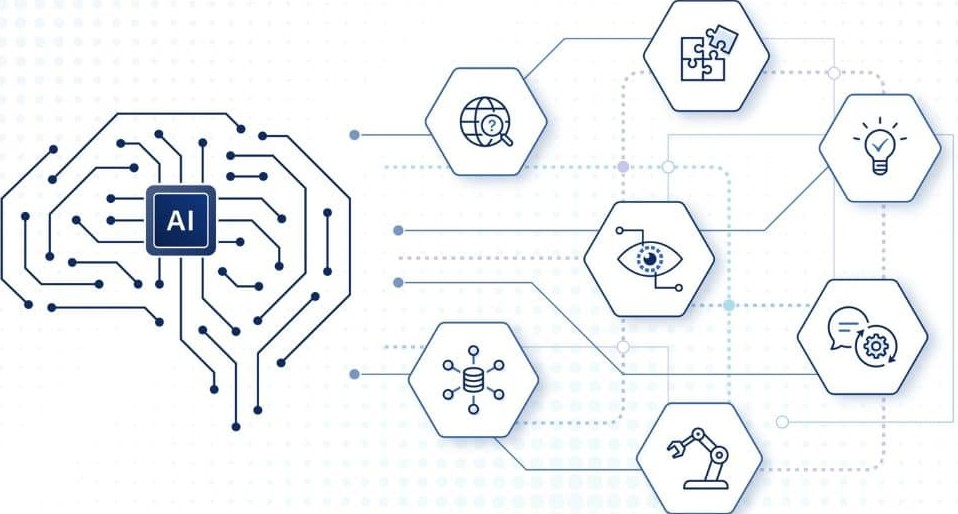

Kaj je AI in kako jo uporabljamo?
Kaj je AI?
Obstaja mnogo definicij za umetno inteligenco. Definicija Evropskega parlamenta se glasi: »Umetna inteligenca je sposobnost stroja, da posnema človeške sposobnosti, kot sta logično razmišljanje, učenje, načrtovanje in ustvarjalnost.« Kaplan in Haenlein opredeljujeta UI kot zmožnost sistema, da pravilno tolmači zunanje podatke, da se iz njih uči in tako dosega zadane cilje. Pogovorno se izraz »umetna inteligenca« uporablja za posnemanje miselnih postopkov človeškega uma, kot sta učenje in reševanje problemov.

Kako jo uporabljamo?
Pravilna uporaba umetne inteligence (AI) temelji na kombinaciji jasnih navodil, kritičnega preverjanja rezultatov in varovanja zasebnosti. AI je najboljša kot pomočnik za hitrejše delo, ustvarjanje idej ali raziskovanje, ne pa kot nadomestek za človeško presojo.
Kako pripraviti dobra navodila (Prompt Engineering):
- Bodite jasni in podrobni: Namesto "napiši mail", napišite "napiši vljuden e-mail stranki, da je projekt zamaknjen za dva dni zaradi tehničnih težav".
- Določite vlogo: AI prosite, naj deluje kot strokovnjak (npr. "Deluj kot izkušen tržnik...").
- Omejite dolžino in slog: Navedite, ali želite kratek, dolg, formalen ali šaljiv odgovor.
Področja uporabe:
- Pisanje in vsebine: Ustvarjanje osnutkov za bloge, e-maile, objave na družbenih omrežjih in popravljanje slovnice.
- Učenje in raziskovanje: Povzemanje dolgih besedil, razlaga zapletenih konceptov in učenje novih tem.
- Programiranje in IT: Pisanje testov, pregled kode (code review) in iskanje napak.
- Programiranje in IT: Pisanje testov, pregled kode (code review) in iskanje napak.
Preverjanje in varnost (Ključno!)
- Preverite dejstva (Fact-checking): AI lahko "halucinira" (si izmišljuje podatke). Vedno preverite ključne informacije, statistiko ali pravna dejstva.
- Varovanje zasebnosti: V javna AI orodja (npr. brezplačni ChatGPT) nikoli ne vnašajte osebnih podatkov, gesel ali zaupnih poslovnih informacij podjetja.
- Človek v zanki: Končno odgovornost za vsebino prevzamete vi. AI vsebino uredite, da bo zvenela naravno in bo točna.
Najboljša orodja za začetek
- Besedilo: ChatGPT, Microsoft Copilot, Claude, Google Gemini.
- Slike: Midjourney, DALL-E 3 (prek ChatGPT), Adobe Firefly.
Izvedi več:
Made by GoogleAI